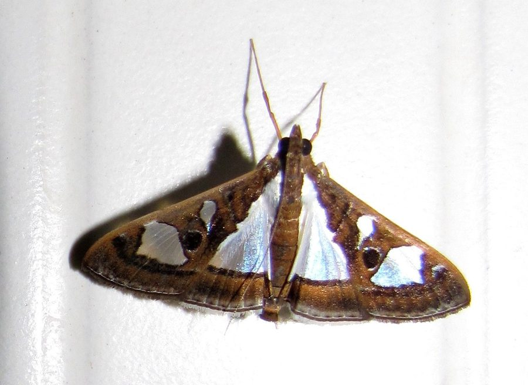

द्वि-धारी मोती पतंगाTwo-striped Pearl Moth
Glyphodes bivitralis · Crambidae · INS-0228

- Scientific name वैज्ञानिक नाम
- Glyphodes bivitralis Guenée, 1854
- Family कुल
- Crambidae
- Hindi हिंदी
- द्वि-धारी मोती पतंगा
- Local names स्थानीय नाम
- two-striped pearl moth, glyphodes bivitralis, do-dhari moti patanga, two striped pearl moth
- Status here यहाँ की स्थिति
- native
- Movement आवागमन
- Resident, here all year
- Known from कहाँ दर्ज
- Others have published records from the wider Awadh–Purvanchal plain, none yet from Basti–Ayodhya अवध–पूर्वांचल से दूसरों के प्रकाशित अभिलेख, बस्ती–अयोध्या से अभी नहीं
- IUCN IUCN
- not evaluated
- Review समीक्षा
- not yet reviewed
When to look कब देखें
Present all year. साल भर मौजूद।
Tell it apart from इनसे अलग पहचानें
द्वि-धारी मोती पतंगा / Two-striped Pearl Moth
Glyphodes bivitralis Guenée, 1854 — Crambidae
द्वि-धारी मोती पतंगा — बरगद, पीपल और शहतूत के पेड़ों के पास पाया जाने वाला एक सुंदर छोटा पतंगा। इसके चमकीले कत्थई-भूरे पंखों पर कांच की तरह चमकते हुए दो चौकोर पारदर्शी धब्बे होते हैं, जो प्रकाश में मोती जैसे चमकते हैं। इसकी हरी सुंडी शहतूत और अंजीर के पत्तों को आपस में रेशम से लपेटकर अंदर छिपकर खाती है।
Quick Identification त्वरित पहचान
| Feature | Description |
|---|---|
| Habit | Small, delicate crambid snout moth with triangular wings held flat |
| Forewing | Rich reddish-brown with two distinct square glassy hyaline patches |
| Hindwing | Ochraceous-brown with a large basal hyaline window and dark border |
| Abdomen | Slender brown abdomen, often bearing a small anal hair-tuft in males |
| Larva | Slender translucent green caterpillar feeding within folded leaves |
Field tip: Inspect foliage of village peepal and mulberry trees for folded leaves webbed with silk, or check outdoor lamps near old fig trees at night.
हिंदी — कैसे पहचानें: कत्थई-भूरे पंखों पर दो चौकोर कांच जैसे पारदर्शी धब्बे और पीपल या शहतूत के मुड़े हुए पत्तों में सुंडी का मिलना।
Morphology आकारिकी
Measurements from Hampson (1896):
| Measurement | Value | Source |
|---|---|---|
| Wingspan (expanse) | 30–34 mm | Hampson (1896) |
Adult description: Head, palpi, and thorax warm chestnut-brown to reddish-ochreous. Forewing reddish-brown, tinged with purplish reflections; marked by two conspicuous vitreous (glassy) hyaline patches: a triangular or trapezoidal patch in the discal cell, and a larger square or rectangular patch just beyond the disc. Hindwing with a large hyaline basal area crossed by a faint dark line, bordered by a broad fuscous-brown marginal band.
Larval morphology: Full-grown caterpillar is slender, cylindrical, translucent pale green with a light brownish head capsule. It possesses fine primary setae and moves with energetic wriggling movements when disturbed inside its leaf shelter.
हिंदी: इसका पंख फैलाव 30 से 34 मिमी होता है। पंखों का रंग कत्थई-लाल होता है और उन पर दो चौकोर पारदर्शी खिड़कियां बनी होती हैं। सुंडी पतली और हल्के हरे रंग की होती है।
Behaviour & Ecology व्यवहार और पारिस्थितिकी
Glyphodes bivitralis is nocturnal. Adults spend daylight hours resting concealed on the undersides of large leaves or in shaded bark crevices of host fig trees.
Flight begins at nightfall. Adults are attracted readily to incandescent and fluorescent lights in rural habitations. When resting, the wings are held outspread in a triangular outline flat against the substrate.
The caterpillars are obligate leaf rollers and leaf tiers on trees belonging to the mulberry family (Moraceae). A young larva weaves silk threads to bind two leaf surfaces together or rolls the leaf margin inward to create a secure feeding tube. It consumes the upper epidermal layers and green mesophyll, leaving a skeletonised leaf structure.
हिंदी: यह पतंगा रात में रोशनी पर आता है। दिन में यह पीपल या बरगद के पत्तों के नीचे चिपका रहता है। इसकी सुंडी पत्तों को रेशमी धागों से सिलकर अंदर से खाती है।
Life Cycle / Phenology जीवन चक्र
| Season / Month | Stage & Activity |
|---|---|
| April–June (Summer) | Adults emerge from overwintered pupae and mate around new fig foliage |
| July–August (Monsoon) | High larval abundance on flushed peepal and banyan leaves |
| September–October | Successive generations feed on mature foliage of wild and orchard trees |
| November–December | Final generation pupates inside folded dry leaves or soil debris |
| January–March (Winter) | Overwintering primarily as pupae sheltered in silken cocoons |
Under warm Gangetic plain conditions, development from egg to adult is rapid, allowing four or more generations per year.
हिंदी: गर्मी के अंत से पतंगे सक्रिय होते हैं। बरसात में सुंडी बहुत तेजी से पीपल के पत्तों को मोड़कर खाती है। जाड़ा शुरू होते ही यह सूखे पत्तों में कोकून बनाकर सो जाती है।
Host Plants or Prey आहार
- Primary Hosts: Foliage of Moraceae trees, including Peepal (Ficus religiosa), Banyan (Ficus benghalensis), and Cluster Fig (Ficus racemosa).
- Cultivated Orchard Hosts: Feeds on leaves of White Mulberry (Morus alba).
- Adult Food: Sucks nectar from small night-blooming flowers and liquid exudates from sap leaks on wounded fig trunks.
हिंदी: इसकी सुंडी पीपल, बरगद, गूलर और सफेद शहतूत के पत्ते खाती है। वयस्क पतंगा रात के फूलों और पेड़ों से रिसने वाले मीठे रस पर जीता है।
Predators / Natural Enemies शत्रु
- Parasitoid Wasps: Tiny braconid and chalcid wasps parasitize larvae inside rolled leaves.
- Predators: Jumping spiders, tree crickets, and arboreal geckos catch caterpillars and resting adults on foliage; nocturnal bats capture flying moths.
हिंदी: पत्तों के अंदर छिपी सुंडी पर छोटी परजीवी ततैये हमला करती हैं। पेड़ों की मकड़ियां और छिपकलियां वयस्कों का शिकार करती हैं।
Agricultural / Human Relevance कृषि प्रासंगिकता
- Sericulture pest: In mulberry sericulture regions, larvae act as significant defoliators, reducing the quality and quantity of mulberry leaf available for silkworm rearing.
- Urban and avenue trees: Infestations on avenue peepal and banyan trees cause localized skeletonising of leaves, but mature trees recover readily with new flushes.
- Management: In sericulture gardens, hand-picking folded leaves and conserving natural braconid parasitoids provides effective cultural control.
हिंदी: शहतूत की खेती में यह पत्तों को खाकर रेशम के कीड़ों के चारे को नुकसान पहुंचाता है। सड़कों के किनारे पीपल और बरगद के पेड़ों पर इसके खाने से पत्ते जालीदार हो जाते हैं।
Expected Locally स्थानीय रूप से अपेक्षित
Not a field record. Written from published accounts for eastern Uttar Pradesh. No confirmed local sighting yet — if you have seen it, that is what the atlas needs.
अभी तक स्थानीय पुष्टि नहीं। यह विवरण प्रकाशित स्रोतों से है, किसी अवलोकन से नहीं।
Expected across the village groves, temple precincts, mulberry orchards, and rural settlements of Basti, Ayodhya, and Sant Kabir Nagar wherever mature Ficus trees grow. GBIF holds published records from the wider Awadh–Purvanchal plain, none yet from Basti–Ayodhya. A first local record would be a photograph of an adult showing clear vitreous wing patches, submitted with date and locality through the About page.
Distribution वितरण
Global range: Widespread across South and Southeast Asia, from India and Sri Lanka through Myanmar, Thailand, Malaysia, and southern China.
In India: Recorded throughout northern and eastern India, the Gangetic plain, Assam, and southern states (Hampson 1896).
In Uttar Pradesh: Distributed throughout the plains in association with fig trees and rural plantations.
In Basti district / eastern UP: Expected around village ponds, roadside fig avenues, and agroforestry plots.
हिंदी: यह पतंगा भारत, श्रीलंका और दक्षिण-पूर्व एशिया के मैदानी भागों में पाया जाता है जहां भी गूलर, पीपल और बरगद के पेड़ मौजूद हैं।
Research Questions शोध प्रश्न
- What percentage of mulberry foliage is damaged by Glyphodes bivitralis in local sericulture plots? / स्थानीय शहतूत की खेती में यह पतंगा कितने प्रतिशत पत्तों को नुकसान पहुंचाता है?
- Which Ficus species supports the highest larval survival rates in Basti? / बस्ती में पीपल, बरगद और गूलर में से किस पर इसकी सुंडी सबसे अच्छी तरह फलती-फूलती है?
- What species of braconid parasitoids attack the leaf-rolling caterpillars locally? / मुड़े पत्तों के अंदर रहने वाली सुंडी पर कौन से स्थानीय परजीवी कीड़े हमला करते हैं?
- How do seasonal temperature changes influence adult attraction to domestic night lights? / मौसम बदलने पर रात की बत्तियों पर इस पतंगे के आने की संख्या में क्या बदलाव होता है?
- Can village children detect the silken leaf shelters of this moth on low mulberry branches? / क्या बच्चे शहतूत की निचली डालियों पर रेशम से सिले हुए पत्तों को आसानी से पहचान सकते हैं?
Similar Species मिलती-जुलती प्रजातियाँ
| Species | How to tell apart | हिंदी |
|---|---|---|
| Cucumber Moth (Diaphania indica) | Wings largely brilliant transparent white with dark brown outer borders | पंख चमकीले सफेद पारदर्शी, किनारों पर चौड़ी कत्थई पट्टी |
| Glyphodes stolalis | Forewings pale ochraceous-white with intricate brown reticulate lines | पंख हल्के सफेद जिन पर बारीक जालीदार कत्थई रेखाएं होती हैं |
| Handmaiden Moth (Amata cyssea) | Body black with orange rings; diurnal; wings with small oval hyaline dots | शरीर काला और नारंगी, दिन में उड़ने वाला, छोटे गोल पारदर्शी बिंदु |
Field rule: Reddish-brown forewings bearing two large square glassy transparent windows combined with a mulberry or fig feeding habit identify Glyphodes bivitralis.
Taxonomy & Classification वर्गीकरण
Original description. Described by Achille Guenée in 1854 as Glyphodes bivitralis in Histoire naturelle des Insectes: Species général des Lépidoptères, vol. 8: Deltoïdes et Pyralites, p. 293.
Subspecies. Monotypic across its mainland Indian range without recognized subspecies.
Family and order placement. Belongs to the snout-moth family Crambidae, subfamily Spilomelinae, in the order Lepidoptera.
IUCN status rationale. Not evaluated on the IUCN Red List; widely distributed and common across agricultural and anthropogenic ecosystems in tropical Asia.
हिंदी: अकील गुएने ने 1854 में इसका पहला वैज्ञानिक विवरण दिया था। यह क्रैम्बिडी कुल का सदस्य है।
Photo Gallery फोटो गैलरी
No photos yet — add field photos to media/species/two_striped_pearl_moth/ and run node scripts/sync_photos.js.
Photos needed आवश्यक फोटो
- [ ] Adult resting flat on foliage showing translucent windows (पत्तों पर बैठा वयस्क पतंगा)
- [ ] Green caterpillar inside folded peepal or mulberry leaf (मुड़े पत्ते के अंदर हरी सुंडी)
- [ ] Specimen attracted to night light (रात में बत्ती के पास बैठा पतंगा)
References संदर्भ
- Guenée, A.M. (1854). Histoire naturelle des Insectes. VIII. Species général des Lépidoptères. Deltoïdes et Pyralites, vol. 8, pp. 1–448. Roret, Paris.
- Hampson, G.F. (1896). The Fauna of British India, including Ceylon and Burma: Moths, vol. 4, p. 355. Taylor and Francis, London.
- Holloway, J.D. (1998). The Moths of Borneo: part 8, Castniidae, Callidulidae, Drepanidae, Uraniidae. Malayan Nature Society, Kuala Lumpur.
- Robinson, G.S., Ackery, P.R., Kitching, I.J., Beccaloni, G.W. & Hernández, L.M. (2001). Hostplants of the Moth and Butterfly Caterpillars of the Oriental Region. Natural History Museum, London.
- GBIF Occurrence Data — Glyphodes bivitralis Guenée, 1854, India (2025).
Source file: species/fauna/insects/two_striped_pearl_moth.md